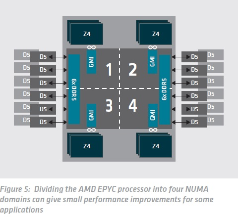
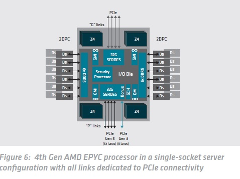
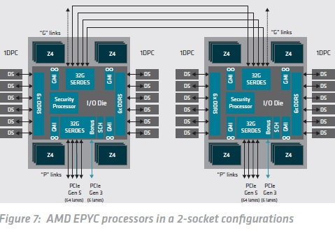
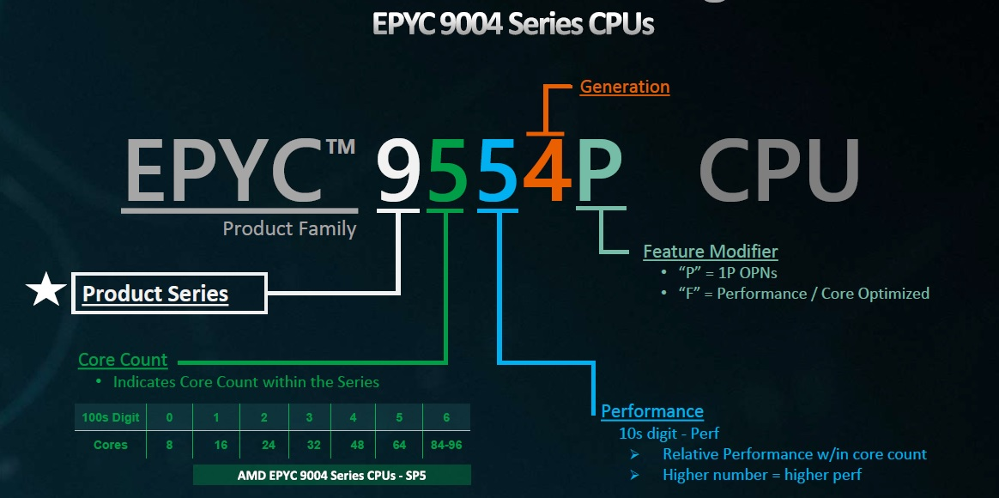

Date of Issued :2023/01/24
Subject : AMD EPYC™ プロセッサー技術詳細「マルチプロセッササーバー設計とNUMAの検討」
Message Contents :
シンデンハイテックスの本社第三営業本部です、いつも大変お世話になっております。前回は、AMD EPYC™ プロセッサーについてシステム・オン・チップとしての詳説をいたしました。今回は、「MUMAの検討」と「マルチプロセッササーバーの設計について説明をさせていただきます。
NUMAの検討
マルチチップアーキテクチャでは、メモリコントローラーとCPUダイ間の接続に応じて、さまざまなメモリ遅延が発生する可能性があります。 これは、不均一メモリアクセス、または NUMA として知られています。 メモリアクセス以外に発生する遅延を考慮する必要があるアプリケーションの場合、これらのさまざまな遅延について、特定のアドレス範囲とそのメモリに最も近いCPUコアとの間に親和性を考慮する必要があります。
AMD EPYC 7001シリーズプロセッサーでは、メモリコントローラは最大8個のCPUコアを備えた同じダイ上に配置され、ダイによって制御されるメモリとダイ上のCPUコアとの間に緊密な親和性を生み出しました。 メモリコントローラーが別のコアセット宛てのデータを要求する必要がある場合、データは内部Infinity Fabric接続を介して1つのダイから別のダイに渡される必要がありました。
AMD EPYC 7002シリーズプロセッサー以降、メモリコントローラをI/Oダイに実装することで、不均一な遅延が大幅に削減されました。 AMD EPYC 9004シリーズプロセッサーでは、Infinity Fabricインターコネクトの最適化により、遅延がさらに減少しました。
それでも、メモリ参照から遅延の最後の1～2%を絞り出す必要があるアプリケーションでは、メモリ範囲とCPUコアの間に親和性を考慮することでパフォーマンスを向上させることができます。 図5は、これがどのように機能するかを示しています。「NPS=4」構成でI/Oダイを4つの象限に分割すると、6つのDIMMがこれらメモリコントローラーは、Infinity Fabric (GMI)を介して最大3つの「Zen 4」CPUダイのセット、または最大24のCPUコアに密接に接続されています。
ほとんどのアプリケーションでは、NUMAドメインの使用を気にする必要はなく、AMD EPYC プロセッサーを単一のドメイン (NPS=1) として使用すると、優れたパフォーマンスが得られます。
Non-Uniform Memory Access (NUMA)とNodes Per Socket (NPS)
NPS=0：2ソケットシステムでのみ使用できます。 システムには1つのNUMAノードを設定します。 メモリは、システム内の24個のメモリチャネルすべてにインターリーブされます。
NPS=1：プロセッサー全体が1つのNUMAドメインであり、すべてのコアがソケットにあり、関連するすべてのメモリがこの1つのNUMAドメインにあります。 メモリは12個のメモリチャネルにインターリーブされます。 ソケット上のすべてのPCIeデバイスは、この単一のNUMAドメインに属します。
NPS=2：プロセッサーが2つのNUMAドメインに分割され、各ドメインにコアとメモリが割り当てられます。 メモリは、各NUMAドメインの6個のメモリチャネルにインターリーブされます。
NPS=4：プロセッサーを4つのNUMAドメインに分割します。 メモリは3個のメモリチャネルがインターリーブされます。 PCIeデバイスは、ソケット上の4つのNUMAドメインの1つに対してローカルになります。
シングルソケットサーバー
「P」接尾辞が付いていない AMD EPYC プロセッサーは、シングル ソケットおよび 2 ソケット構成で使用できます。 接尾辞「P」が付いたプロセッサの部品番号は、「P」リンクを PCIe I/O 接続専用にすることで、シングル ソケット サーバー用に最適化されています。
＊AMD EPYC プロセッサーのネーミングにつきましては、このメール後半の資料をご参照ください。
２ソケットサーバー
これらの構成では、3つまたは4つの16 レーン「G」リンクを使用して2番目のプロセッサに接続します。I/O集約型のサーバー設計では、3つのリンクをInfinity Fabric相互接続として使用でき、各CPUからの1つの追加リンクをPCIe Gen 5専用にすることができ、サーバーのI/O容量を160レーンにすることができます (図 7)
AMD EPYC™ プロセッサーネーミング
AMD EPYC™ プロセッサー製品セレクターツール
このツールを使用すると、インテル®Xeon®スケーラブルプロセッサーと同等のAMD EPYCプロセッサーを比較できます。 比較の基準として「1P EPYC」または「2P EPYC」を選択、 次に、Intel スケーラブル世代を選択し、ドロップダウンリストから比較する Intelプロセッサを選択します。次に、比較メトリックを選択します。 このツールは、指定されたメトリックに基づいて選択された Intel プロセッサに対応する AMD EPYC プロセッサを自動的に表示します。



